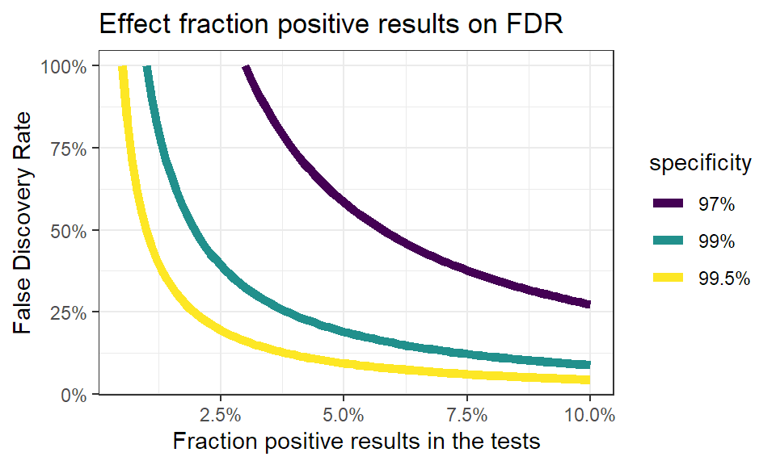

A bit of algebra on false positives in tests
Diagnostic tests aren’t perfect. They can give you a wrong result in two ways :
- false positive : you test positive while you’re not.
- false negative : you test negative while you’re infected.
A false negative is far more worrisome than a false positive, you rather raise a false alarm than miss an infection. So most diagnostic tests are very sensitive in order to pick up as many infections as possible. A higher sensitivity also increases the probability of a false positive, and those are said to inflate the numbers. But is that really true? Let’s take a look at the (very) basic theory behind test performance.
False positives in your test population.
The relative number of false positives is called the False Discovery Rate or FDR, and depends on a number of factors :
- Sensitivity (here noted Se) : this is the proportion of infections detected by the test. So a high sensitivity means that most infections are also picked up by the test.
- Specificity (here noted Sp) : this is the proportion of healthy people with a negative test result. So a high specificity means that you have only few false positives.
- prevalence P : the true proportion of infections in the tested population. This is what you ultimately want to know.
Diagnostic tests all have a certain sensitivity and specificity. These are properties of the test itself (assuming they’re carried out correctly and consistently), so they aren’t influenced by who you test or how many infections there really are in your population. Using these properties, we can take a look at how false positives and also false negatives influence our test results.
The False Discovery Rate
The false discovery rate or \(FDR\) is simply the proportion of false positives on the total of your positive test results. You can estimate this rate if you know the sensitivity and specificity of this test.
Let’s assume for a moment we know the prevalence. Then the proportion of true positives in your test results is calculated as \(P \times Se\), i.e. the proportion of real positives times the “detection rate” or sensitivity. Likewise, false positives over the entire test population can be calculated as \((1 - P) \times (1 - Sp)\). Here is \((1 - P)\) the proportion of true negatives, and from that group a proportion of \((1 - Sp)\) will test positive even though they’re not ill.
The total proportion of positive tests (here called \(N\)) is merely the sum of both true and false positives. You can write this down as follows:
\[ N = (P \times Se) + ((1 - P) \times (1 - Sp)) \]
Using this notation, the formula to estimate the false discovery rate \(FDR\) becomes the following. Remember, this is nothing else but the proportion of false positives on the total of positive tests.
\[ FDR = \displaystyle\frac{(1 - P) \times (1 - Sp)}{N} \]
To really know the FDR, you don’t only need to know how sensitive and specific your test is. For this formula you also need an idea about how much people are really infected. But we don’t know the latter, we can only see the proportion of positive tests \(N\). Luckily you can rewrite the equation for \(N\) above in such a way that you can use the specificity, sensitivity and proportion of positive tests to estimate the prevalence:
\[ P = \displaystyle\frac{N + Sp - 1}{Se + Sp - 1} \]
With these two equations it becomes possible to not only estimate how many of our tested people are really infected, but also how many of those tests are false positives.
Note again that differences in testing strategy might impact the positive test rate \(N\), but they won’t affect the characteristics of the tests. So the relations here don’t change, regardless of the testing strategy.
From positive tests to positive cases
Sensitivity and specificity of PCR
PCR methods are in general very specific and rather sensitive. That’s also the reason they’re used so often for detection of viruses. In the literature you find numbers for specificity ranging from 97% to 100%, and for sensitivity from 66% to 95%. These depends partly on the criteria used while evaluating the PCR-test, and the exact flavor of the PCR procedure.
Keep in mind it is impossible to have a false positive rate that’s larger than the proportion of positive tests. You can’t claim that 2% of your negative population tests positive if you only have 0.5% positive tests over the total of tests. Even if there are no infections, a specificity of 98% means that 2% of your healthy population will test positive regardless. As Belgium reported positive rates as low as 0.6%, it’s not unreasonable to assume the specificity of the tests carried out here is at least a whopping 99.4%. We’re good at this!
A simulation
Let’s use the previous equations to see what the relation is between the characteristics of the test, the proportion of positive tests and the false discovery rate. If you click on Code, you can see these equations turned into an R function.
calc_p <- function(n, sp, se){
p <- (n + sp - 1)/ (se + sp - 1)
# You can't have less positive cases than expected by
# the proportion of false positives when there's no
# infections!
p[n < (1-sp)] <- NA
# get around floating point errors
p[round(n,4)== round(1-sp, 4)] <- 0
p
}
calc_fdr <- function(n, sp, se){
p <- calc_p(n, sp, se)
np <- 1 - p
np * (1 - sp) / (p*se + (np * (1 - sp)))
}With these functions I created a few graphics to show how everything ties together.
False discovery rate in function of positive results.
The influence of the fraction of positive test results on the false discovery rate looks like this:
# Make the data:
theseq <- seq(0.005,0.1, by = 0.001)
pdata <- tibble(
posrate = rep(theseq, 3),
specificity = rep(c("99.5%","99%","97%"),
each = length(theseq) ),
fdr = c(calc_fdr(theseq, 0.995,0.8),
calc_fdr(theseq, 0.99, 0.8),
calc_fdr(theseq,0.97,0.8))
) %>% na.omit()
ggplot(pdata, aes(x = posrate, y = fdr, color = specificity)) +
geom_line(lwd = 2) +
scale_x_continuous(labels = scales::percent) +
scale_y_continuous(labels = scales::percent) +
labs(x = "Fraction positive results in the tests",
y = "False Discovery Rate",
title = "Effect fraction positive results on FDR") +
theme_bw() +
scale_color_viridis_d()
You see immediately that when the number of positive test results go up, the false discovery rate quickly drops. This makes sense: when more people are infected, you find more true positives. Even more, when infections rise you’ll find less false positives, as less people are healthy. This effect becomes stronger when the specificity of the test is higher.
Again, this is solely an effect of key properties of the test, and has nothing to do with the testing strategy. The testing strategy will have an impact on the fraction of positive test results, but won’t change the nature of this relation.
Calculating the number of true positives.
In the end, we only care about how many people are really infected. Once we know the sensitiviy and specificity, we can use the previous equations again to calculate how many true infection we have for a given proportion of positive results. Let’s see how this looks for different sensitivities and specificities.
pdata <- tibble(
posrate = rep(theseq, 3),
sensitivity = rep(c("90%","80%","60%"),
each = length(theseq) ),
fdr = c(calc_p(theseq, 0.995,0.9),
calc_p(theseq, 0.995, 0.8),
calc_p(theseq,0.995,0.6)),
specificity = "99.5%"
) %>% rbind(
tibble(
posrate = rep(theseq, 3),
sensitivity = rep(c("90%","80%","60%"),
each = length(theseq) ),
fdr = c(calc_p(theseq, 0.98,0.9),
calc_p(theseq, 0.98, 0.8),
calc_p(theseq,0.98,0.6)),
specificity = "98%"
)
) %>% na.omit()
ggplot(pdata, aes(x = posrate, y = fdr, color = sensitivity)) +
geom_segment(x = 0, xend = 0.05, y = 0.05, yend = 0.05,
col = "red", linetype = "dashed") +
geom_segment(x = 0.05, xend = 0.05, y = 0, yend = 0.05,
col = "red", linetype = "dashed") +
geom_segment(x = 0, xend = 0.075, y = 0.075, yend = 0.075,
col = "red", linetype = "dashed") +
geom_segment(x = 0.075, xend = 0.075, y = 0, yend = 0.075,
col = "red", linetype = "dashed") +
geom_path(lwd = 2, lineend = "round") +
scale_x_continuous(labels = scales::percent) +
scale_y_continuous(labels = scales::percent) +
labs(x = "Fraction positive results in the tests",
y = "Real fraction of infections",
title = "True infections in relation to sensitivity") +
theme_bw() +
scale_color_viridis_d() +
facet_wrap(vars(specificity),
labeller = as_labeller(
c("98%" = "Specificity: 98%",
"99.5%" = "Specificity: 99.5%")))
This is where it becomes really interesting. When the fraction of positive test results goes up, at one point the real fraction of infections becomes actually larger than the positive tests. This also makes sense: when your infected population grows, the number of false negatives grows. So when enough people are infected, you’ll miss more infections than you have false positives. So instead of counting too much infections, you’re not counting enugh.
So when someone points towards “false positives” to doubt a certain trend, now you know that :
- the proportion false positives goes down when the positive rate in your test population rises.
- if the positive rate climbs too much, the real infection rate becomes actually higher than observed in the test results.
- low positive test rates cause an overestimation of the number of infections, higher positive test rates cause an underestimation.
disclaimer: These things are actually random variables. Using the correct statistical distributions will also allow you to calculate uncertainties on these numbers, but that’s a story for another day.